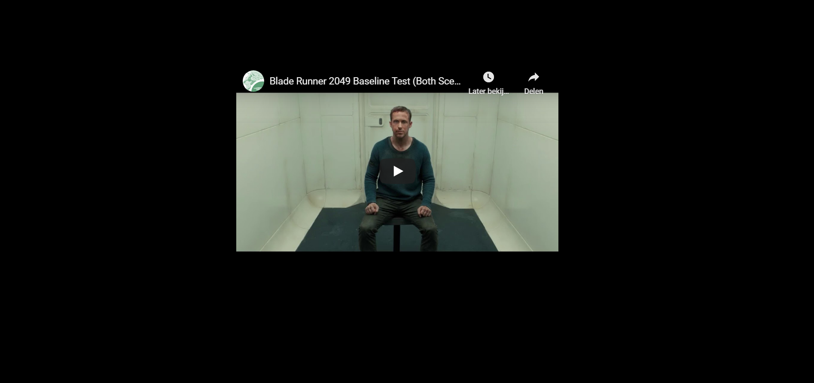

Closed-captions tegenwoordig zijn heel basic en kunnen niet de spanning en de sensatie van de filmgeluiden goed overbrengen. Bij het vak Webtypografie was het aan ons de taak om een video fragment van de film Blade Runner 2049 te voorzien van een visuele sterke weergave van geluiden. Dit product moesten wij speciaal ontwerpen voor Darice, een vrouw die in haar leven haar gehoor is kwijtgeraakt.
